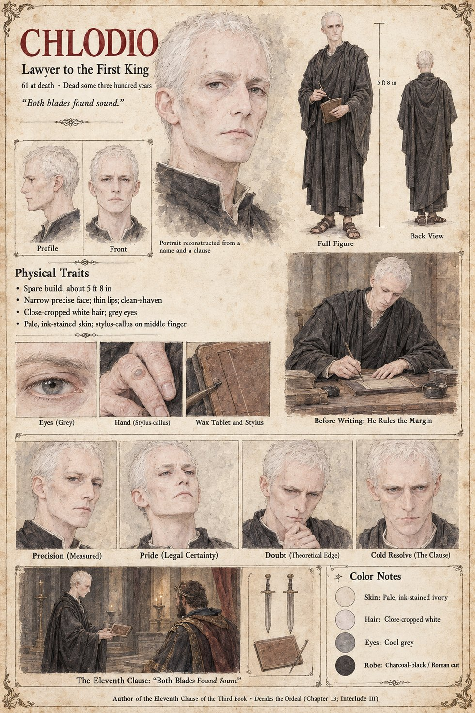

Chlodio
Lawyer to the First King · author of the Eleventh Clause of the Third Book · 61 at death, dead some three hundred years
A dead man whose pen decides the Ordeal: the lawyer to the First King, dead some three hundred years by the time of the case, who wrote the Eleventh Clause of the Third Book. Rothari's finding on the black oak Altar of Oaths, that if both blades are sound the cause is not for the altar, is the Clause's work, and the sheet's own note, Decides the Ordeal (Chapter 13; Interlude III), says the same. The Digest of the Eleventh Clause that Sigebert Marl sells the Chancellor Ricbert and the Duke's steward Odilo after the Ordeal, four pages for a mark, is a commentary on it, and Ansbert, standing by the north pillar, is the one who tells the Hierarch that both blades are Whole.
The sheet says its portrait is reconstructed from a name and a clause, so the face, the age and the robe are the sheet's, not any record's. It draws him as a spare, narrow-faced man with close-cropped white hair, grey eyes and thin lips, in a charcoal-black robe of Roman cut and sandals, with a stylus-callus on the middle finger; one scene shows him Before Writing: He Rules the Margin, ruling a line on a wax tablet at a desk, and another, The Eleventh Clause: “Both Blades Found Sound”, shows him presenting the tablet to a crowned man in a candle-lit hall, with two swords and the tablet drawn in a small panel beside it. His expression panels run Precision (Measured), Pride (Legal Certainty), Doubt (Theoretical Edge) and Cold Resolve (The Clause). His pull-quote is the sheet's own line. Written from the sheet, from what the other Case 4181 pages and the Threefold Crown lore already say, and from the character notes in the case's publication-prep file; the manuscript itself was not to hand. His age of 61 at death, his spare build of about 5 ft 8 in and pale ink-stained skin are the sheet's own.
“Both blades found sound.”